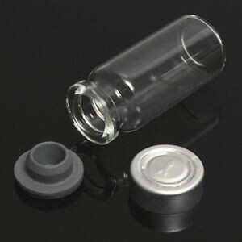
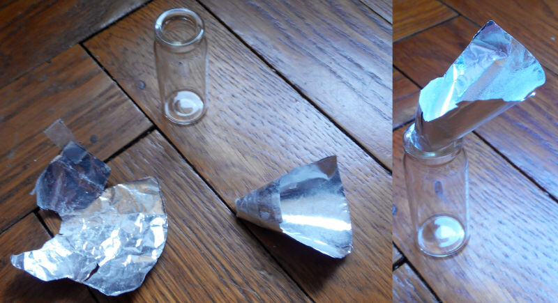

MTFHRT@groups.io | Wiki | Ultimate DIY
MtF HRT: Ultimate DIY
Here I describe Do-It-Yourself hormonal treatment for male-to-female transsexuals: be your own gatekeeper, endocrinologist, pharmacist and nurse. Cook injectable estradiol by yourself. Safer, more effective and unbelievably cheaper than relying on medical professionals.
Without gatekeepers
Endocrinologists usually require a letter/referral from gatekeepers: psychotherapists, psychologists, sexologists or psychiatrists. Not because endocrinologists care for you, but because they care for themselves: they fear that you regret and sue them for causing you bodily harm. There isn't a medical examination, blood or psychological test able to prove or disprove presence or absence of transsexualism in each separate person. Statistics is meaningless when the question is whether you'll regret social transition or not. So, gatekeepers make appearances of "examination" and stall you for long time while milking you (or insurance/taxpayers) for money.
Medical professionals routinely make mistakes in both directions: approve crazy people and unnecessarily delay transsexuals who'll not regret.
If you obtain or make hormones without prescription, you'll have nobody but yourself to blame if you regret social consequences of your decision to take hormones.
Be your own endocrinologist
Endocrinologists treat mostly diabetes and problems with thyroid. For that endos prescribe multiple blood tests and adjust meds dosages to drive blood glucose or T4 level into "normal range". Endos are used to such approach, it keeps them busy and paid. With the only goal to maximize quantity of doctor visits paid by patients or insurance, gangs of American endos write guidelines how to treat transsexuals: with same approach. All the numbers in such guidelines and all the bogeyman stories about side effects of estradiol are bullshit.
"Normal range" is from measurements of 90% of healthy people: 5% of lowest and 5% of highest results are discounted. Normal range of estradiol for pregnancy is up to 40000 pg/ml = 147000 pmol/l.
In a group of 86 pregnant women estradiol level was up to 75137 pg/ml = 275753 pmol/l: http://cebp.aacrjournals.org/content/12/5/452.figures-only Pregnant women don't drop dead from such estradiol level, so you wouldn't even if your peak reaches 5000 pg/ml.
It's even darker than that: the numbers in guidelines are chosen deliberately low to force transsexuals to pay for more doctor visits to beg for more estradiol.
Doctors also recall the mantra in their gospels (textbooks) about estrogens: dosage the less the better, stop as soon as possible. They never realize that this mantra was written in the fear of uterine cancer. And that you haven't an uterus.
Currently lifetime breast cancer risk for cis-women in North America is 13% because of hundreds of monthly hormonal cycles. Doctors believe "the more estrogen, the more breast cancer risk". But statistically, every pregnancy decreases the woman's breast cancer risk though during pregnancy blood estradiol level increases in hundred times. Explanation of this seeming contradiction: because every pregnancy decreases cumulative number of menstrual cycles. In more detail: At one phase of hormonal cycle ductal epithelium in milk glands proliferates (proliferation is tissue growth by cell division), at another phase apoptosis comes (tissue shrinking by cell suicide). Each cell division (mitosis) carries risk of mutation. Mutations cause cancer. Before advent of contraceptives, breast cancer was a disease of celibate nuns. A woman was pregnant, then breastfeeding for few years (that also usually suppresses menstruations), then quickly :) impregnated again and so on until death or menopause. Then a woman had few menstruations during her whole life. If you don't make monthly cycles then your breast cancer risk is as low as men's, no matter how high estradiol level.
Giving MtF low estrogen dosage alone doesn't work. So, doctors prescribe antiandrogens: spironolactone (dangerous and mostly ineffective) or cyproterone acetate (harmful, dangerous, counterproductive) or GnRH superagonists such as Lupron or Zoladex (insanely expensive) or bicalutamide (expensive, and very few endos heard of it, side effects listed in package insert seem dangerous though really they aren't). Doctors love to prescribe expensive meds because doctors' fee seems less significant in comparison. Most likely you'd be prescribed spironolactone or cyproterone acetate, so your doctor is hazardous for your health.
Why not to give more estradiol? Because largest estradiol pills nowadays are 2 mg. One pill a day according to the gospel (package insert) does nothing for MtF. No doctor would prescribe more than 4 pills a day. Medical school is cramming huge amount of info. Doctors aren't used to dig for numbers and to think by themselves. They blindly believe other doctors' opinions. No doctor managed to dig for numbers and calculate: birth control pills prescribed to over hundred million women contain ethinylestradiol 0.03 mg/day which affects liver and blood clotting 500 times stronger than oral estradiol, so risk from oral estradiol 0.03*500= 15 mg/day is considered acceptable. But estradiol 15 mg/day is 8 pills per day - seems too much for doctors. Simple arithmetic is alien science for them.
I'm an engineer, I'm not afraid of arithmetic. :) And I study MtF HRT in depth since 1989. In Italy ethinylestradiol 1000 mcg = 1 mg pills are available, so doctors there prescribe 2 such pills per day to MtF. That's as dangerous as oral estradiol 2*500= 1000 mg/day. And? Nobody notices. I conclude that oral estradiol 20 mg/day is okay.
MtF HRT with an estrogen without antiandrogens is called "monotherapy". Oral estradiol 20 mg/day (10 mg twice a day) suppresses testosterone production by testicles completely, so antiandrogens are unnecessary. You can mail-order estradiol pills from abroad, though expensive:
https://www.inhousepharmacy.vu/p-166-estrofem-2mg.aspx
https://www.inhousepharmacy.vu/p-2073-estradiol-2mg.aspx
https://www.inhousepharmacy.vu/p-1866-estrofem-tablets-2mg.asp
Only 5% of swallowed estradiol reaches blood. Sublingually (under the tongue) or subbuccally (between a lip and a gum) gives better absorption, but I don't believe that more than in 1.5 times, can cause mood swings and soon becomes too inconvenient. Transdermal patches and gels with estradiol are even more expensive than pills. One more way to deliver estradiol is injections, 100% absorption. If the solution is concentrated then you can use insulin syringes. Estradiol valerate (EV) 40 mg/ml 0.18 ml every 5 days or estradiol enanthate (EEn) 50 mg/ml 0.22 ml weekly is as effective as oral estradiol 20 mg/day, but is cheaper. Factory-made injectable EV is available without prescription https://www.inhousepharmacy.vu/p-99900888-ar-estradiol-valerate-40mgml.aspx (though often out of stock, "expected" date is a lie: they just increase it). I make a copy 15 times cheaper than that, and I make EEn suitable for injections every 7 or 10 days: http://lena.kiev.ua/EV/ Below I explain how you can cook injectable estradiol by yourself.
If you had male pattern baldness then add finasteride 0.05 - 0.1 mg (1/100 - 1/50 of a 5 mg pill) once a day, available in InHousePharmacy or AllDayChemist or from me as an addition to ready-to-use injectable EV or EEn. Don't take dutasteride because of possible mental side effects (also, dutasteride accumulates in blood and continues to give side effects for months after stopping it). Finasteride is necessary despite complete suppression of testosterone production by testicles by injectable estradiol or/and surgical removal of testicles because of DHEA production by adrenals. Finasteride blocks DHEA->T->DHT conversion inside hair follicle cells which is unnoticed by blood tests.
I advise everybody (not only MtF) to take a vitamins+minerals supplement like plain Centrum non-stop, all year round. If in USA then here or this. In Europe "One-a-Day" by Hungarian company "BiotechUSA" is cheaper in sports nutrition stores or Amazon.
It really is that simple after you throw out all the bullshit about "physiological" or "target" levels and learn all the details which side effects are real and which aren't.
Why I chose this dosage to advise for monotherapy: with it I can be sure that it's enough for any MtF without blood tests. Different people on the same dosage get blood estradiol level differing in up to 10 times. Sensitivity of different people for the same level of the same hormone differs in times. Sensitivity is as important as levels. There isn't a test for sensitivity. In USA a blood test without prescription costs $76 (1 2 3a+3b) and is available not everywhere. In UK £89. In Australia $69. In many countries only with prescription, and doctors refuse to prescribe tests for meds they didn't prescribe. My or DIY injectables without blood tests are cheaper than lower dosage with several blood tests. And no time wasted on determining barely enough dosage.
I don't believe that beginning from lower estradiol dosage (possible safely only with addition of bicalutamide) gives better results. Doctors love to begin from low estrogen dosage with lots of blood tests because this keeps them busy and paid. So they claim that it's allegedly better. Doctors in other countries parrot that. There isn't any evidence. People repeat doctors' claims.
In short: when it's about MtF HRT, doctors do not know better.
Cook your injectable estradiol by yourself
If you are attentive and diligent then you can make injectable estradiol by yourself (for yourself only) as I described below. If you are afraid or unsure then you'll be able to buy ready-to-use vials from me after I return to Kiev - depends on the war. I have over 3300 satisfied customers. I lost count how many times I was called lifesaver, fairy godmother, angel, godsend, saint.
Buy estradiol enanthate powder
Don't buy estradiol valerate because it's inferior: requires injections every 5 days and either lower concentration (more oil to inject) or addition of a solvent (benzyl benzoate) which costs money and sometimes causes allergy. Both estradiol valerate and estradiol enanthate are converted to the same estradiol in blood. Estradiol enanthate is absorbed into blood slower, that gives more stable blood estradiol level and allows longer time between injections.
Most of substances used by Western pharmaceutical manufacturers comes from chemical factories in China. There are vendors in China selling the same substances to anybody (private persons too), no questions asked. Testosterone is a controlled substance, estradiol isn't.
Vendors I bought from:
1) https://aoksbio.en.made-in-china.com/product/gdnfPERUILkb/China-99-Purity-Oestradiol-17-Heptanoate-Powder-CAS-4956-37-0-with-Safe-Delivery-and-Good-Price.html
2) https://hbldbiotech.en.made-in-china.com/product/fdIAjtZoAGWq/China-Estradiol-Enanthate-CAS-4956-37-0-Large-Particle-or-Powder.html (later this seller was suspected to send not what ordered, so for now don't buy from them).
There are other vendors there, but it's a gamble: some sellers send unrelated white powder (not a hormone at all). Don't use a dishonest vendor "Vanz" and spammers "Faithful" and "Luoxing". Elsewhere I saw negative reviews about: "Wison". Don't use sellers touting anabolics etc. for bodybuilders on their main page: you don't want to get testosterone instead of estradiol. I checked this trader with lower prices - nothing suspicious. "gzbiocar" seems suspicious for me.
Salespeople on made-in-china use nicknames or European-sounding aliases, same was on Alibaba. You'll see a real Chinese name only if you pay via Western Union.
Such vendors are not manufacturers of estradiol powder, just resellers/traders/retail. You'll never know who was the manufacturer (perhaps 1 or 2). Vendors' pages are full of mistakes and lies, including photos of manufacturing plants (they manufacture few substances if any but sell hundreds), numbers, prices and minimal order (MOQ). Register (I gave zeros instead of phone number and wrote "private person" instead of company name) and use the "Get Latest Price" link, tell them your requirement "Estradiol Enanthate (Estradiol Heptanoate) CAS 4956-37-0, I prefer powder with large particle size (not micronized)" and ask for price for quantity 20 g with the cheapest shipping. If the vendor answers with "FOB" price then that means not including shipping, ask again for cheapest shipping fee. Don't ask for CoA (certificate of analysis), it'd be fake. Really you'll get slightly better than 98% purity according to USP and similar standards for pharmaceuticals for humans, there isn't estradiol powder with any worse purity (manufacturers of veterinarian pharmaceuticals get the same purity); better purity ("reference standard") is used only for calibration of measuring equipment and costs for example €353 for 100 mg. Cheapest shipping gives also least chances of problems with Customs. The (separate) "forwarding" company they use knows what to lie on the Customs declaration; you may find also papers about an unrelated benign substance like vitamin C - also to fool Customs. Ignore offers to communicate via Whatsapp or other messengers, don't reply to emails, reply to the vendor only via https://membercenter.made-in-china.com/message/index.html
Vendors offer several payment options, "Alipay" or "trust insurance in Alibaba" allow payment with a card and take 3% fee. "Aoksbio" accepts Western Union, Bitcoin and SWIFT (wire/bank transfer), same total price for 10 and 20 g, so order 20 g.
If the vendor ignores your requirement and sends you micronized powder then it's suitable but more difficult to work with because clings to everything.
Please join this [MTFHRT] group (you must both "confirm" your email address with the link you'll be emailed and email an intro about yourself to moderators) and post prices and your experiences in detail, ask questions.
Equipment
Necessary
The only necessary equipment is cheap ($7 - $15) pocket 0.001 g (1 mg) scales (or DIY balance scales you can make from a long narrow wooden plank, 2 small nails and 2 syringes, one of them with 0.5 ml water as a precise weight).
If you buy ready-to-use scales then they must look exactly like this: https://www.ebay.com/itm/363747240371
https://www.ebay.com/itm/363747240371
https://www.aliexpress.com/item/4000586480263.html
Newer models are not suitable because they attempt to appear more precise and stable by ignoring small weight changes.
Search for other sellers:
https://www.ebay.com/sch/i.html?_nkw=scale+0.001&_sacat=0&LH_BIN=1&_sop=15&_blrs=recall_filtering&_ipg=120
https://www.aliexpress.com/wholesale?SearchText=scales+0.001g+diamond
(check all pages).
If the scales have slots for 4 batteries then insert only 2 at any one side.
Optional
The vials are designed to be sealed with rubber stoppers and aluminium caps using a tool (crimper, $36). But you can crimp a cap without a crimper: by hand using a piece of metal like a spoon handle.
You can buy a 129°C autoclave for $130, but it's not really necessary as you make vials for yourself only. 121°C was necessary for obsolete reusable syringes with fresh blood of another patient because hepatitis B virus can survive 100°C for short time if in blood. You are not dealing with fresh blood, so 100°C (water boiling in a pot) is enough. I use an autoclave just for customers' peace of mind. At first I sold kits with EV powder, solvent, preservative and instructions how to mix and sterilize in a pot, multiple people including myself sterilized at 100°C, never a problem. If you live at significant altitude (like in Denver "mile high city") then likely you already have a pressure cooker. I advise against dry heat sterilizers and ovens because of too uneven temperature, too much can burst a vial. Bead sterilizers not suitable.
American "homebrewing" bodybuilders were afraid that their anabolics would be "inactivated" during heat sterilization, so they started the filtering fad: they assumed (wrong) that 0.2 μm filtering sterilizes. Filtering is not a reliable sterilization. I can understand filtering for intravenous infusions liters per day (in ICU), but for our subcutaneous injections 1 ml/month filtering doesn't make sense. There were multiple complaints that some EV ampules made by pharmaceutical factories in India are fake. I think not deliberately fake but just incompetent technologists and managers: they mixed in a tank in an air-conditioned cold (to limit bacteria) room without solvent for not enough time, then undissolved powder got stuck in a filter. If you are paranoid and insist on following the filtering fad then wait several days until every last clump of powder finishes dissolving in a vial, then use a PTFE hydrophobic 0.22 μm 25 mm syringe filter and a homemade filtering rig, I made mine (for paranoid customers, I don't filter what I inject into myself) from 4 stacks of books, a piece of plywood/MDF with a hole for a 10 ml Luer Lock syringe, a wide wooden plank/board, a 6 l (1.5 gallon) plastic bottle with water as a weight, the plank slightly tilted and leaning on a wall for stability. And anyway sterilize the sealed vial you filtered into at 100°C after filtering!
Unnecessary
Unnecessary: beaker, mixer/stirrer, room with controlled airflow, depyrogenation. My technology: terminal heat sterilization (after the vials are sealed); measure and mix in each vial separately, so no glassware to wash with water or collecting dust (skin flakes and mites) if never washed. Water - bacteria - pyrogens. Don't try to improve this technology: it protects you from mistakes and unexpected problems.
Other raw materials and expendables
Vials, stoppers, caps

Buy 10 clear glass vials 10 ml each with 20 mm grey (butyl rubber) stoppers and aluminium caps. Caps may be bare aluminium or painted, with plastic tops or all-metal. Screw-on and all-plastic caps are not suitable. Stoppers must have this shape:https://www.ebay.com/itm/223836409810
https://www.aliexpress.com/item/32903943374.html
https://www.aliexpress.com/item/33024594919.html
Flat septa are not suitable instead of stoppers. Search:
https://www.ebay.com/sch/i.html?_nkw=vial+10ml+stopper+cap&_sacat=0&LH_TitleDesc=0&LH_BIN=1&_sop=15
https://www.aliexpress.com/wholesale?SearchText=vials+10ml+stoppers+caps
After you remove central part of the cap, most of the cap must remain and hold the rubber stopper at place. Caps must not have tear-off weak place on one side like this:

Oil
MCT oil (liquid, not powder, not in capsules, without flavor added) - cheapest bottle you can find, in a local sports nutrition store or mail-order. It's the only ingredient with somewhat limited shelf life: roughly 5 years as rumored though bottles are usually marked with arbitrary shelf life 2 years. You'll use up 10 ml per year. In USA you can mail-order a 2 oz (60 ml) sample bottle on eBay for $6 including shipping. Check prices also on Amazon. In local stores smallest bottle can be 400 ml, roughly $13. MCT oil is marketed as a food supplement to be taken 15 ml/day, taken orally is rapidly absorbed. You'll inject 500 times less, so any purity is okay (it's really all the same purity despite some dishonest sellers' claims).
Preservative (optional)
Optionally you can add a preservative (antibacterial): benzyl alcohol. You'll use up 7 ml for 30 years. If you are in USA then smallest bottle (20 ml) is $7 on eBay. If you don't add the preservative then make sure that each time you draw from a sterilized vial, you take a new syringe. I inject myself with estradiol enanthate in MCT oil without preservative because of my allergy.
Syringes for mixing
Measure MCT oil with a 10 ml (or 5 ml) syringe. If you can find an all-plastic syringe without (usually black) rubber at the inner end of the plunger then one syringe will last you forever. Else likely you'll have to take a new disposable syringe every time you cook a few vials (up to 5 years apart) because the oil very slowly spoils that rubber. Vial stoppers are made from resistant rubber.
If you add a preservative then use one of syringes you bought for injections (see below) to measure 0.2 ml.
Mix
Make a small funnel from a piece of foil (the thicker foil the better; shinier side inside), hold it folded with a small piece of sticky tape. If you have only thin foil then perhaps strengthen it by wide sticky tape on another side (or try to strip the outer paint from a few different beer or soft drink aluminium cans with nail polish remover, then cut a clean can with scissors). May be use something conical to wrap the foil around before cutting off unneeded parts. The hole at the pointy end of the funnel must be slightly (not much) smaller than the opening in the vial. Use this funnel to weigh up estradiol enanthate powder and to pour the powder into a vial. The funnel I'm using at the center, unfolded piece of foil from my previous funnel at the left, a funnel in a vial at the right:

Two recipes I can recommend:
1) 500 mg = 0.5 g of estradiol enanthate (density 1.1 g/cm3),
benzyl alcohol (preservative - antibacterial) 0.2 ml,
MCT oil 10-0.2-0.5/1.1= 9.35 ml.
2) 0.5 g of estradiol enanthate,
MCT oil 10-0.5/1.1= 9.55 ml.
Sit comfortably at a table, put the scales onto the center of a sheet of blank paper ("landscape" orientation: width more than height). Put the funnel onto the circle on the scales, pointy side to the left (as at the center of the photo above). Turn the scales on, wait for 0.000
Pour estradiol enanthate powder onto the funnel over the center of the circle on the scales until the scales show any number between 0.500 and 0.503
If you poured too much, take excess powder off with a knife tip. Don't fuss over part of powder which may fall off through the pointy end of the funnel or elsewhere, it's what the paper sheet is for.
Take an empty vial with fingers of left hand, put the vial hole to the pointy end of the funnel. Lightly press the funnel into the vial with left index finger (it's the most tricky part: you must prevent the funnel from falling off the vial and spilling the powder, but you must press lightly to not crumple the foil). Carefully rotate the vial upright together with the funnel over the paper sheet while continuing holding the funnel in the vial with the left index finger. Take a plastic pen or wooden pencil with right hand, tap lightly multiple times on the glass vial you hold in left hand fingers to shake the funnel until all the powder pours from the funnel into the vial.
If some powder fell off, use knife tip to put most of it back into the bag.
Now you may optionally draw 0.2 ml of benzyl alcohol into a syringe, pour it into the vial over the powder and watch as the powder sags a little and partially dissolves.
Measure the MCT oil with a syringe and pour into the vial.
Close the vial with the rubber stopper, put the cap onto the stopper. While pressing the cap onto the vial, put the vial upside down (cap down) onto a book. While pressing the vial down, bend the rim of the cap in several (8-10) places with a spoon handle so that the cap holds the stopper at place. Don't press too strongly to not shatter the glass.
While clenching the vial with two fingers at bottom and cap, shake up the vial thoroughly during a full minute (it's a long time).
Wait several days, shake up the first vial few times each day. The warmer in the room, the faster dissolving. If the powder dissolved completely to clear solution then you were sold the real thing and enough pure. For next vials don't wait.
Another way to make sure that you got really estradiol enanthate is checking melting point of the powder: it may be slightly less or slightly more than 100°C. Measure/pour 500 mg more powder into another vial, don't pour liquids yet, close the vial, but bend the cap rim in only 3 places. Put the vial into a pot with tap water, boil the water (while watching the powder in it), turn the heat off, wait for the water to cool off, take the vial out of the water. If the powder partly solidified and doesn't all move completely freely in the vial then it's the real thing. Few oil-soluble substances have such relatively low melting point. But if melting point of the powder you got happens to be slightly more than 100°C then this test is inconclusive: you'd need a pressure cooker or an autoclave to heat the vial to slightly more than 100°C. After the test unbend the cap, open the vial, pour liquid[s], seal, and now you'll have to wait for much longer time (up to a month) until the solidified part of the powder dissolves.
Sterilize
For sterilization put the sealed vial into a pot with tap water, boil the water, keep the water boiling for 30 min, turn off the heat, wait until the water cools off. The cap darkens - that doesn't matter. If you already have any pressure cooker then use it instead of a pot, else a pot is enough!
During sterilization the powder finishes dissolving. Shake up the vial (ignore tiny bubbles).
Wash off limescale (calcium carbonate from heated tap water) from the vial with cloth wet with vinegar.
Let the vial to dry, handwrite "estradiol enanthate 50 mg/ml" in small letters on paper in 3 lines, cut that out (the smaller label the better) and glue it onto the vial with a piece of transparent sticky tape just slightly larger than the label.
Begin a new vial
If the aluminium cap is all-metal without plastic top then the cap has 2 or 3 incisions in a circle at the center of the top of the cap. Either tear off the center of a cap (hold to not pull entire cap off) or cut it out using small scissors with sharp tips to expose central part of the rubber stopper underneath. Don't pierce the rubber stopper.
If your caps are with plastic tops then stick a flat screwdriver or a knife under the top, the top should detach with the central part of the cap. If you accidentally pulled entire cap off and the rubber stopper came out of the vial then fix the cap back and repeat sterilization.
The very center of the rubber stopper is marked with smaller circle - it's where needles should be inserted.
Keep
Keep the powder sealed airtight in a vial or in a bag with as little air as possible. Keep the powder, mixed but yet unused vials, benzyl alcohol and oil wrapped in foil to protect from light. Keep the vial you are using in a box, drawer or cupboard. Not in a fridge. Keep at room temperature (whatever it is), in standing position. Before use, look at the bottom of a vial: if it became white instead of transparent then put the vial at a warm place, and EEn will dissolve back, the warmer the faster. Then shake up the vial (ignore tiny bubbles).
Total price
Here I use prices (including shipping) I saw at the time of this writing for people living in USA:
20 g of estradiol enanthate powder $180 + Alipay/Alibaba fee 3%
Scales $14.26
10 vials with stoppers and caps $4.45
2 oz (60 ml) of MCT oil $5.99
20 ml of benzyl alcohol (preservative) $6.75
5 syringes 10 ml (for measuring MCT oil) $2.66
100 syringes for injections $14.94
20 g of estradiol enanthate powder will be enough to cook 39 vials which will last you 39*10/0.223*7/365= 33 years.
Initial expenses 180*1.03+14.26+4.45+5.99+6.75+2.66+14.94= $235
Total expenses during 33 years (180*1.03+14.26+4*4.45+7*5.99+6.75+2.66+18*14.94)/(33.5*12)= $1.34 per month. A hundred times cheaper for safer and much more effective HRT than doctor-prescribed. And you don't depend on doctors' whims and meds shortages.
Legal
If you make injectable estradiol for yourself only, no problem. But if you sell or gift it to anybody else, you are in legal trouble. Somebody is going to snitch, guaranteed.
Inject yourself
Syringes for injections
Syringes for injections - insulin syringes with permanently attached (fixed, integrated, non-detachable) needles 1/2" (12-13 mm) long, a new syringe every week or 10 days.
"Tuberculin" syringes with fixed needles 5/8" (16 mm) are available only in few mail-order stores in USA.
Needle gauge/diameter doesn't matter, drawing MCT oil through 30G takes one minute. Both U-100 and U-40 insulin syringes are suitable. Insulin syringes marketed for animals (veterinarian) are perfectly okay too.
If you discard an usual syringe with detachable needle after each injection then you lose 0.092 ml of the solution in the "dead space" in the socket between syringe and needle: http://lena.kiev.ua/deadspace.png , so a vial will last you 7 months instead of 10. Also, the socket can leak air which makes drawing seem impossible (tighten the socket with force and twist).
In most countries insulin syringes are available in most local pharmacies without prescription. Some pharmacists or pharmacy chains are holier than Pope, don't believe if few pharmacists claim prescription-only, just go to another pharmacy.
Or you can mail-order. Depending on country: USA (or search), Canada: 1 2, UK: 1 2 3, France: 1 2 3, Netherlands: 1 2 3, Germany, Italy, Spain: 1 2, Denmark, Finland, Mexico, Australia: 1 2, NZ, Ukraine: 1 2 3 4 5, Russia: 1 2. Worldwide: 1 2 3.
Needle fright
If you are deadly afraid of needles (hey, I have instinctive fear of heights, so I understand) then buy an insulin syringe, lie down on your bed on your side (if you faint, no problem) and stick yourself with the empty syringe into the butt. If you manage that (possibly after several attempts), next times will be much easier.
As last resort, instead of estradiol enanthate you can buy micronized estradiol powder and take it orally 10 mg twice a day. 20 g will last you 33 months instead of 33 years, $5/month.
Dosage
I recommend to inject 0.22 ml (22 units on U-100 insulin syringe scale or 8 units if U-40) weekly (on the same day of every week) or 0.31 ml every 10 days (on 1, 11, 21 of every month). The same dosage from the very beginning of MtF HRT and all the time later, post-op too, never stop. I chose this dosage to advise so that it's enough for complete suppression of testosterone production by testicles in any MtF. On the same dosage of the same hormone different people get trough blood estradiol level (just before next injection) differing in up to 10 times. Also, sensitivity of different people to the same level of the same hormone differs in times. Sensitivity is as important as levels. There isn't a test for sensitivity. So, why do doctors prescribe blood tests to MtF? Just to impress naive patients and to keep themselves busy and paid. For most MtF the dosage I advise is more than enough, but so what? It's laughably cheap. For a few this dosage is barely enough, so don't gamble and don't waste time. A few blood tests would be more expensive than all the hormone you'll ever take, so why bother? Doctors love to tell bogeyman stories about side effects - just to scare you into blood tests and - paying them for more doctor visits.
If a doctor sees results of your blood tests, likely he'll claim "too much estradiol, dangerous". Then give him the link to a scientific article describing how doctors injected women with 4 times higher estradiol dosage than I advise, those women got blood estradiol level roughly 3000 pg/ml = 11000 pmol/l in average. Full text of that article can be accessed via Sci-Hub, or members of this [MTFHRT] group can read it here. I quote that article:
The treatment was well tolerated. No adverse effects were seen, the patients expressed a feeling of particular well being, 23% of them wanted to have the injections repeated and none of them wanted to stop treatment because of troubles or side effects.
That's on 4 times higher estradiol dosage than I advise.
How to inject
I recommend to inject into the upper outer quarter of a buttock into fat (subcutaneous) while lying on a bed on your side. It's the safest and least painful place. I advise against injecting into thigh because that can cause too fast absorption and faster blood estradiol level drop.
Take care to touch the needle to nothing except inner surface of needle cap, the skin at the place of injection and the rubber stopper of the vial.
There is an old tradition to disinfect skin (and the rubber stopper of the vial) with alcohol before an injection. Pharmacies sell alcohol-soaked swabs/wipes for that. However, this ritual is optional. World Health Organization says:
Wash skin that is visibly soiled or dirty. Swabbing of the clean skin before giving an injection is unnecessary. Swabbing of clean vial tops or ampoules with an antiseptic or disinfectant is unnecessary.
Also, you can read Introduction in a scientific article.
Anyway, even if you follow this ritual, don't wipe the needle because that would make it more dirty.
How to inject:
Lie down on a bed on your side. Injection will be into fat in the upper outer quarter of a buttock (exact place doesn't matter, fat layer in buttocks is thicker than needle length even in skinny people). Pull off the cap from the needle. Pull as much air into the syringe as you intend to inject. Pierce the center of the rubber stopper with the needle, inject the air into the vial. Turn so that the vial is at the top, syringe at the bottom. Pull the plunger to 0.1 ml more than you intend to inject (create vacuum in the syringe), hold and wait several minutes until the liquid very slowly seeps down and top surface of the liquid rises up to 0.08 ml mark on the scale. Push most of air bubbles and excess liquid back into the vial. Small air bubbles may remain, don't worry, injecting air bubbles is completely harmless. Pull the needle out, stick it into your butt (at about 90° angle) all the way in, inject (can take some time - speed doesn't matter). Pull out the needle, immediately press at the place of injection with a finger or a cotton wool pad/disc. While continuing to press, make a few circular motions (shift the skin, don't drag the finger across skin). Continue to press for 1 min. Cap the needle.
"Monitoring" unnecessary
If you begin your HRT from injectable estradiol as I describe here then likely in a few weeks you'll experience pain in breast buds (in many cases only at one side at first) like many cis-girls experience at puberty. The pain is not a sign of a problem and will last not forever.
Dosage I advise stops testosterone production by testicles as completely as surgical removal of testicles, but that will not rid you of the grey shade from shaven mustache and beard - a dead giveaway: you'll not pass until you complete needle electrolysis. Despite false advertising, laser and other hair removal methods using intense light in most cases remove facial hair temporarily, no matter how many sessions. Ignore this wisdom at your peril.
Any estradiol level between 300 and 5000 pg/ml (1100 - 18000 pmol/l) is okay for both pre-ops and post-ops. Estrone level doesn't matter. All doctors' assertions "too much" are bullshit meant to control us and extort money under guise of "care". The only reasonable cause to do a blood test for estradiol (once, at least a month after first injection, only on a day of next injection before it) is your peace of mind that you got indeed estradiol enanthate. But above I described two other ways to check that, and likely you'll experience pain in breast buds. I tested a new batch of estradiol enanthate powder on myself, my blood estradiol level was 1272 pg/ml = 4670 pmol/l 5 days after an injection. I had SRS in 1999, I needn't to suppress testosterone. Nevertheless, I don't intend to decrease my dosage. It slows down aging, on it I look and feel better.
Myths and what not to do
Above I explained about some myths and fallacies. Some more:
Myth: discard a vial 30 days after you began it. Bureaucrats get their salaries for inventing new rules, no matter how unreasonable. This rule was invented for hospitals with multiple patients (some with infectious diseases), not for your home.
Fallacy: use separate needles for drawing and injection. It's easy to bend needle tip on hard glass ampule bottom while drawing from an all-glass single-dose ampule, it's where the myth of "needle blunting" originates. Insulin syringes with non-detachable needles are designed for insulin vials also with rubber stoppers.
If an average doctor prescribes injectable estradiol, he says nothing about needles, he says "inject into muscle" because the gospel (instructions sold with injectable estradiol) says so (without explanation why - really it's because the solvent used with EV sometimes causes allergy, then IM helps). You go to a pharmacy and ask for intramuscular injections. An average pharmacist asks you for injection volume (less than 1 ml) and sells you 2 ml syringes, each syringe comes with a needle in the same pack. Manufacturers put long needles with 10 ml syringes and shorter needles with 2 ml syringes. Why? Aesthetics. :-/ You get syringes with dead space and needles 25 mm long, you inject into buttock. You, pharmacist, nurse and doctor think that you inject into muscle. Really fat layer in buttocks is thicker even in very skinny people. You in fact inject into fat. And... it works. Gospels are full of fallacies.
Don't give a vial into the hands of a doctor, he'd destroy it. Doctors are jealous.
Don't use an emulator (calculator of blood levels). It uses average statistical data, but you are not a statistically average person.
Myth: begin from pills (low dosage), then after some time switch to injections. Doctors love to begin from low dosage because that keeps them busy and paid. So they invent explanations why it's allegedly better. People repeat doctor claims.
Myth: decrease estrogen dosage post-op. Estrogen dosages described in pharmaceutical reference books (collections of package inserts) for men with prostatic cancer are higher (designed to suppress testosterone production by testicles) than for women (after menopause) - limited in the fear of uterine cancer. Only after SRS we magically become women in doctors' eyes.
Myth: "estrogens" increase risk of blood clots, take Aspirin to counteract that. Ethinylestradiol increases risk of venous thrombosis, Aspirin decreases risk of arterial thrombosis in coronal arteries in the heart. Combination of ethinylestradiol with Aspirin is like wearing a flak jacket while going against a gas attack. Don't confuse ethinylestradiol (EE) with estradiol enanthate (EEn). Unlike ethinylestradiol, injectable estradiol practically doesn't affect risk of thrombosis. Did you know that thrombosis risk depends (among other things) on whether your blood is type 0(1) or any other type ("non-zero")? Estradiol enanthate dosage I advise affects blood clotting less.
Fallacy: stop "hormones" some time before SRS or another surgery, resume only some time later. Surgeons don't know and don't want to know differences between various estrogens and routes of their delivery. Ethinylestradiol in combination with bloodflow in immobile legs stopped by stirrups (to move legs out of surgeon's way during SRS) can cause deep vein thrombosis and deadly pulmonary embolism as a consequence. Don't try to explain to the surgeon that injectable estradiol doesn't do that, tell that you comply but silently continue injections for your passability and mood not to worsen. Blood tests surgeons require check some blood clotting parameters, not estradiol.
Myth: libido and erections are signs of testosterone. In many MtF estradiol dosage I advise stimulates libido and erections though suppresses testosterone production by testicles completely. If still in doubt, do a blood test for testosterone on a day of next injection before it. Cis-women (and post-SRS MtF) get erections of clitoris - exactly same mechanism as erections of penis.
Myth: excess estrogen is converted to testosterone. The conversion estrone<->estradiol is bidirectional, but the conversion testosterone->estradiol is strictly unidirectional.
Myth: if you take too much estradiol then SHBG will bind it and make it unusable. If estradiol level increases, liver produces more SHBG. Nevertheless, free estradiol level increases too.
Words "estrogen dominance" were invented by marketers of progesterone and quackeries they call progesterone bla-bla-something like "Wild Yam". Long ago progesterone was produced chemically from wild yam, but human body cannot perform that chemical conversion.
If you are wondering about real progesterone:
1) Injectable progesterone is very short-living, must be injected daily. Oral progesterone is ineffective because most of it is converted to allopregnanolone which common blood tests confuse with progesterone. Hydroxyprogesterone caproate is not bioidentical, it's not converted in the body to progesterone (unlike estradiol valerate and estradiol enanthate).
2) Progesterone decreases rate of synthesis of estrogen receptors. Cis-women are supposed to benefit from that, but goals of MtF are opposite.
3) Estradiol develops ducts in milk glands, progesterone develops alveoles. Most of breast volume is ducts and connective tissue between them. If an alveole formed (at the end of a duct), that duct will not grow in length anymore. So, progesterone can stunt breast growth. Cyproterone acetate too, it's a strong progestogen.
I advise not to add progesterone for at least 3 years since starting estradiol injections at least 40 mg/month (not since the very beginning of HRT). Or never add progesterone. Though progesterone is a female hormone, that doesn't mean that it's beneficial for MtF (no uterus).
Myth: an article linked from Wikipedia claimed a case of prolactinoma as a side effect of estradiol enanthate. Actually factory-made injections with estradiol enanthate always contain also high dosage of a progestin. Cyproterone acetate is a strong progestin and is known to cause prolactinoma. One more reason to never add progesterone if you haven't an uterus.
Myth: compounding pharmacies make superior products. If you get exceptionally lucky and find a doctor willing to prescribe as high injectable estradiol dosage as I advise who doesn't freak out at blood test results (you'd have to pay to gatekeeprs, doctor, pharmacy and labs), compounding pharmacies in few countries can cook injectable estradiol with prescription. No compounding pharmacy would have estradiol enanthate powder, and I doubt that they can make estradiol cypionate (EC) 50 mg/ml because factory-made EC is 5 mg/ml max. They cannot make more than 10 mg/ml without solvent (benzyl benzoate) which can cause allergy. They use other oils which also cause allergy more often than MCT oil. But the main their problem is that they never mix in each vial separately and often repeat Indian factories' mistake I described above: undissolved powder gets stuck in a filter, so you get much less estradiol than prescribed (often happens in Canada). Another example of their stupidity: a compounding ("Galenic") pharmacy in Italy used ethoxylated Castor oil (essentially a soap) instead of plain Castor oil, so of course injections hurt immensely and were ineffective. If you want it to be done right, Do It Yourself.
Another my how-to: voice.